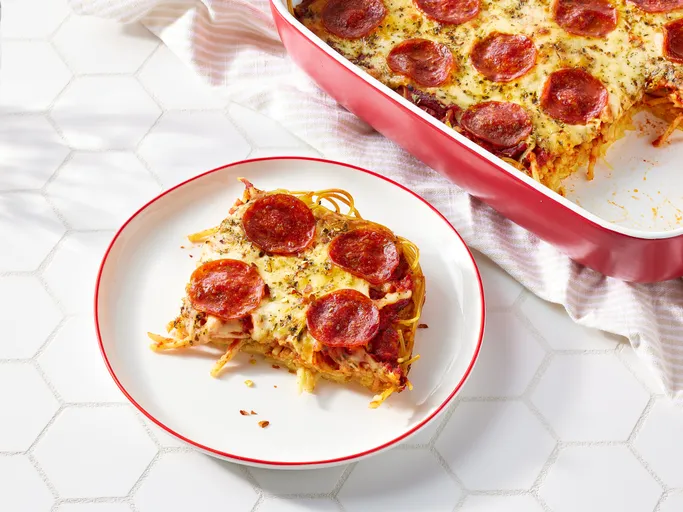

Odin's Project
Back to Home
Spaghetti Pizza

This baked spaghetti recipe is from my children's preschool. A fun combination of pasta and pizza ingredients, it's always a hit with the kids.
| Prep Time |
20 minutes |
| Cook Time |
1 Hour |
| Servings |
8 |
Why You will Love This Recipe
Spaghetti, pepperoni, mozzarella, and sauce make a quick, fun, hearty pizza-style meal.
Bake in under an hour for a kid-friendly, sliceable casserole with yummy crispy edges.
“I froze the leftovers. I defrosted it, and the recipe was great.” — Allrecipes member Lela.
Ingredients
- Cooking spray
- 1 (8 ounce) package spaghetti, broken into 2-inch pieces
- 2 cups shredded mozzarella cheese, divided
- ¼ cup milk
- 1 large egg, beaten
- ¼ teaspoon salt
- ¼ teaspoon garlic salt
- 1 (16 ounce) jar spaghetti sauce
- 1 teaspoon dried oregano
- ¼ teaspoon dried basil
- 4 ounces pepperoni sausage, sliced
Process
- Gather all ingredients.
- Preheat the oven to 425°F (220°C). Grease a 9x13-inch baking dish with cooking spray.
- Bring a large pot of lightly salted water to a boil. Cook spaghetti, stirring occasionally, until tender yet firm to the bite, 8 to 10 minutes. Drain and rinse with cold water.
- Mix ½ cup mozzarella cheese, milk, egg, salt, and garlic salt together in a large bowl.
- Add drained spaghetti and mix until well combined. Spread the mixture into the prepared baking dish. Bake for 15 minutes. Remove from the oven and reduce the temperature to 350°F (175°C).
- Spread spaghetti sauce over the noodle mixture. Sprinkle with oregano and basil, then top with the remaining 1½ cups mozzarella cheese. Arrange pepperoni over the cheese.
- Return to the oven and bake until the cheese is bubbly and beginning to brown, about 30 minutes. Let stand for 5 minutes before cutting.